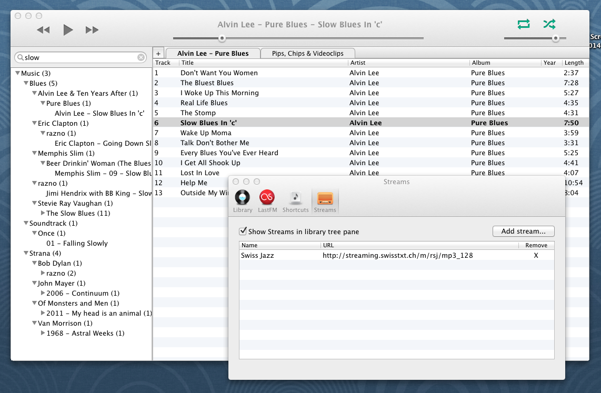

Martin
Martin is a lightweight open source audio player for OSX.
You point it to your music folders, and Martin displays them in the tree pane on the left. Your files and folders are scanned and kept in internal library, which makes searching and browsing fast. Folders are watched for changes automatically.
Playlists are displayed in a tabbed interface.
There is last.fm support and some global shortcuts for controlling playback.
I've been working on Martin because I couldn't find anything out there to my liking. Feel free to contact me if you have any questions or suggestions. I apologize in advance for any annoying bugs that you may encounter.
Features:
- FLAC support
- Playing HTTP streams
- Loading and saving of m3u/pls playlists

Keyboard shortcuts and hints
While in search field:
- Enter - Add search results to the selected playlist
- Command+Enter - Create new playlist with search results
- Alt+Q - Enqueue search results
On selection:
- Enter - Play item
- Command+Enter - Create new playlist with selection
- Alt+Q - Enqueue selection
While in playlist:
- Left arrow or Right arrow to move between playlists
Global:
- / or Command+F - go to search
Use Command+drag to create a new playlist while dragging from tree or another playlist. Other keyboard shortcuts should be discoverable through menu and context menus.